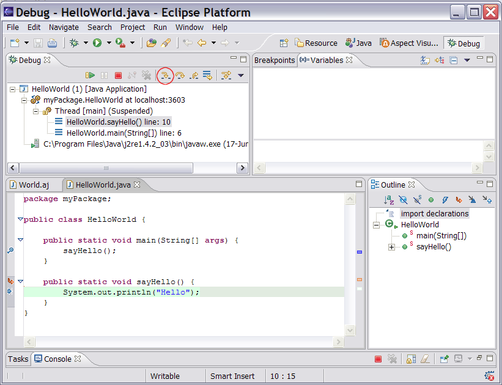
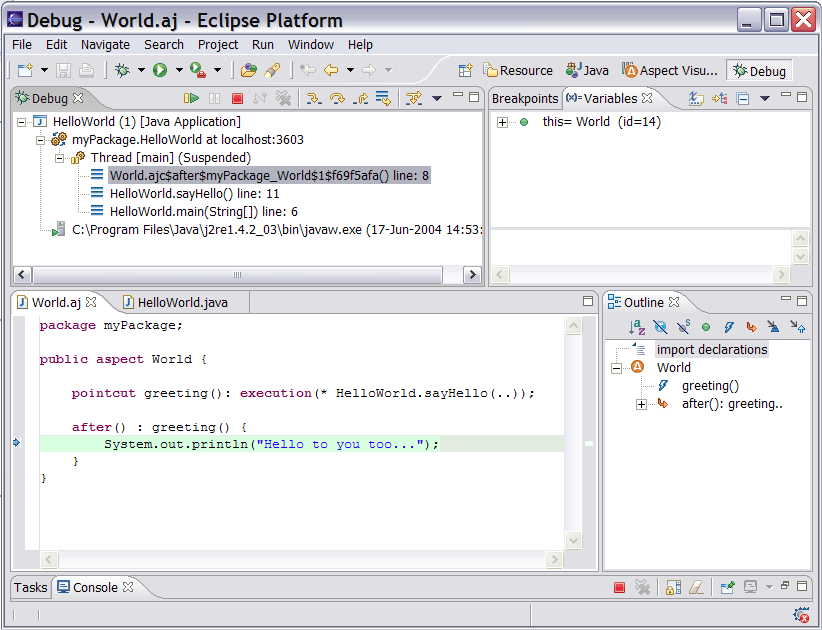

Copyright © 2004 Eclipse.org.
All Rights Reserved
Debugging AspectJ Programs
You can debug
AspectJ programs using the normal Java debugger. To
set a breakpoint, right-click in the gutter of the editor and choose “Toggle
Breakpoint”, or simply double-click in the gutter.

With one or
more breakpoints set, you launch the Eclipse debugger in the normal way by
clicking on the debug icon in the toolbar. Use the “step into” button
(highlighted) to step into the body of advice.

If this is
the first time the aspect has been loaded or initialised, you will need to
‘step return’ from the class loading, aspect initialisation and “aspectOf” calls before finally being able to “step into”
the advice:

You can use
the Java Debug step filters (Window -> Preferences -> Java -> Debug
-> Step Filtering) to make this process a little easier.
Note – a
current limitation until we have full JSR 45 support is that you cannot step
into ‘around’ advice. There is also a limitation which means that in some cases breakpoints inside ‘around’ advice will not be triggered.